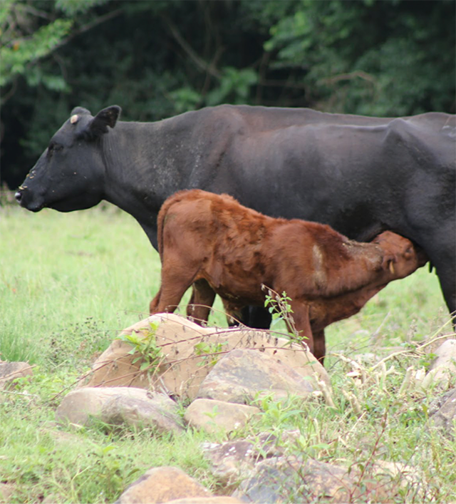
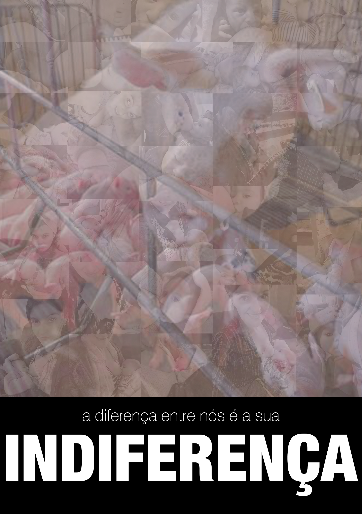
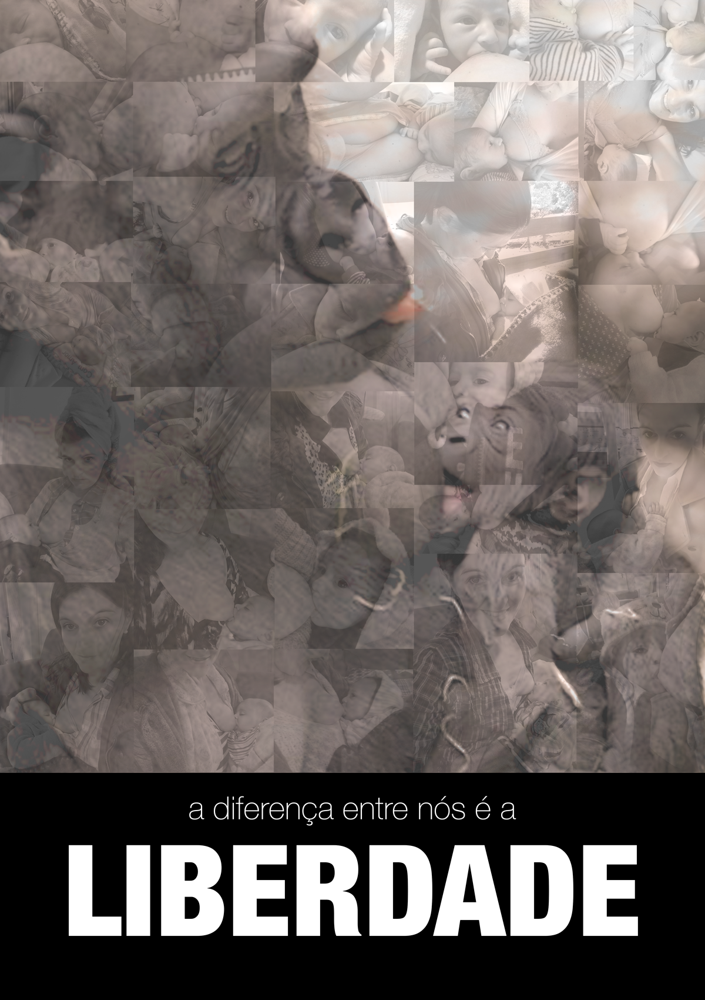
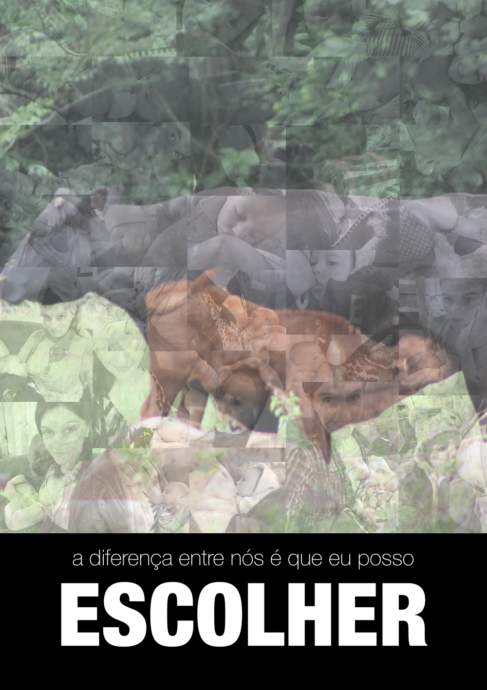
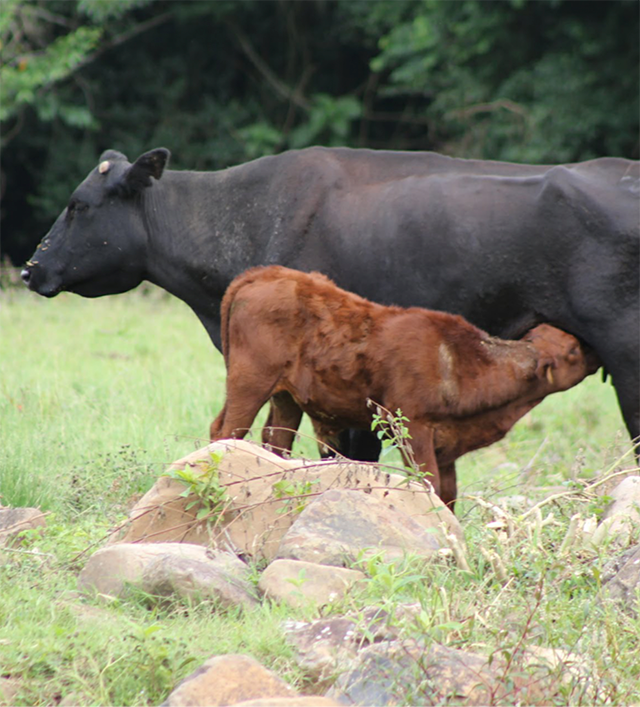
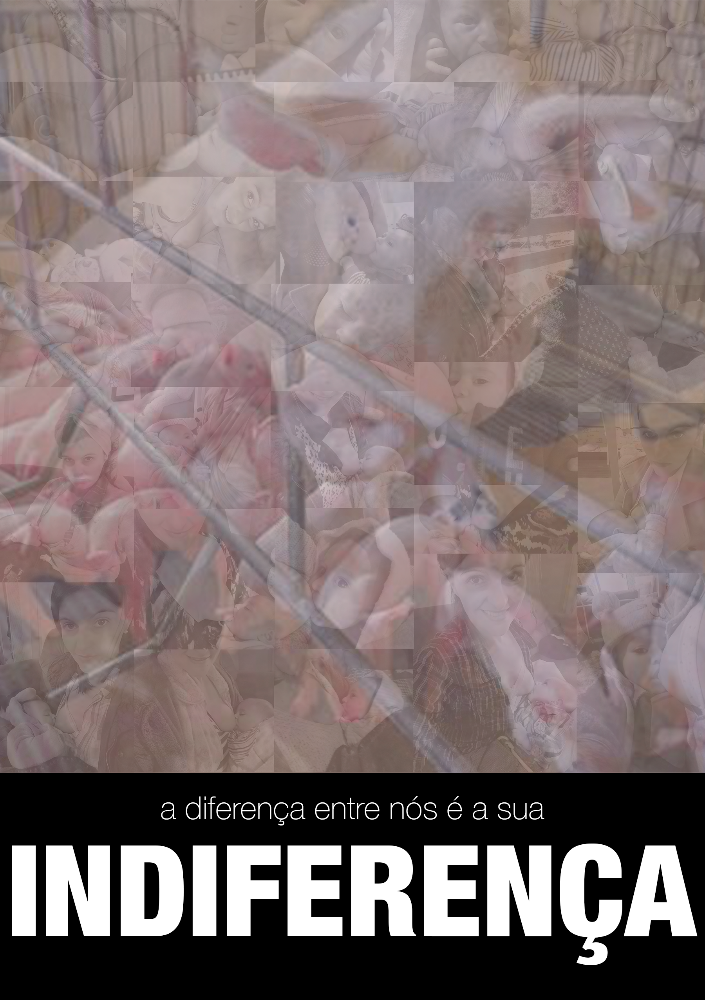
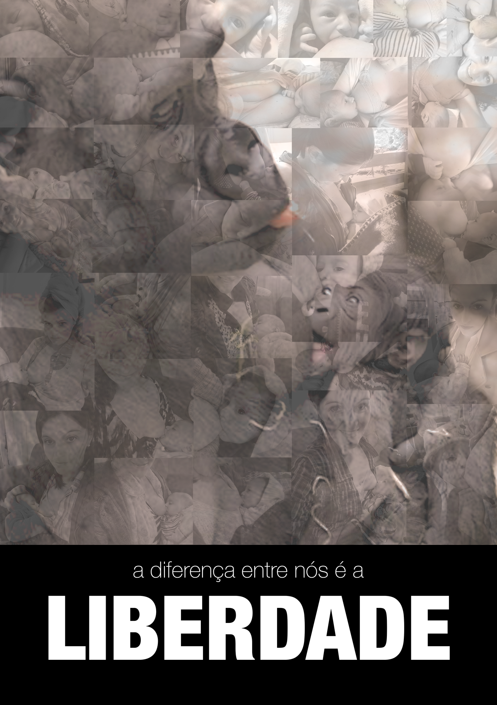
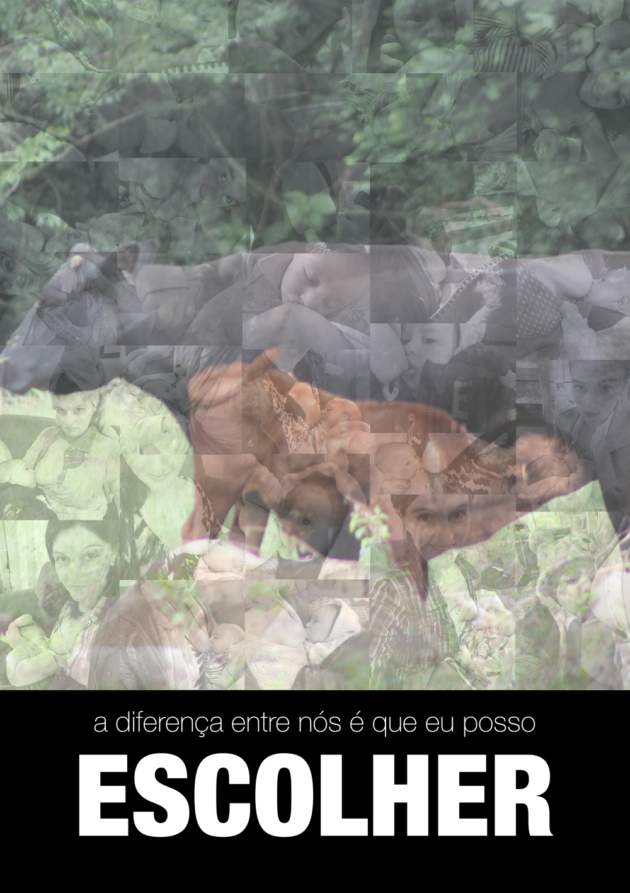

Se você é mãe sabe o que é amar e sofrer pelo seu filhote.
Esse projeto convida a dividir um espaço com elas, mães da classe Mammalia que deram a luz mas não puderam ver seus filhotes crescerem. Elas não puderam exercer a maternidade porque alguém que consome animais roubou, torturou, matou seu filhote. Provavelmente essas mães também estão mortas.
Se você é mãe e se sensibiliza com isso, escolha a plataforma que você usa e baixe um desses aplicativos. Assim você terá a experiência de misturar sua imagem à dor de outras mães. Coloque-se no lugar dela e espalhe o amor e o respeito. Ao interagir com o trabalho, você salva as imagens na pasta do projeto em .png, daí é só imprimir e colar em locais públicos que tenham grande trânsito de pessoas.
O projeto foi criado por Débora Aita Gasparetto, no contexto dos Grupos de Pesquisa Design, Ciência e Tecnologia e Arte Digital e Ativismo UFSM/Cnpq. As imagens escolhidas para o projeto misturam parte do acervo da autora com imagens de notícias geradas nas mídias, relacionadas à maternidade e exploração animal, seja em granjas de criação de porcos ou zoológicos.

 






